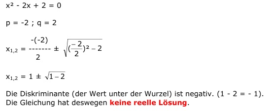

Quadratische Gleichungen Aufgabe 28 x² - 2x + 2 = 0 p = -2 ; q = 2  x1,2 = 1 ± 1 - 2 Die Diskriminante (der Wert unter der Wurzel) ist negativ. (1 - 2 = - 1). Die Gleichung hat deswegen keine reelle Lösung.